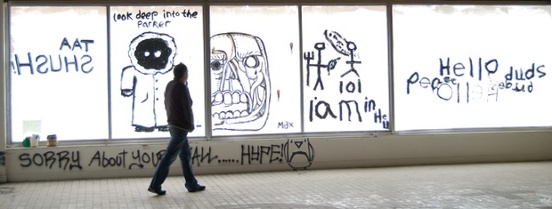

| Details |
A family-friendly open arts, crafts and music event, everyone welcome. Painting, sculpture, photography, film, interactive art, performance, fashion, and whatever else happens! There will also be nightly events, like film nights. - Cafe open all day
- Exhibitions
- Sat: Circus workshops
- Sat: DIY fashion show
- Sat eve: Cabaret & bands
Temporary Autonomous Arts (TAA) is about creating free, open access exhibition space by opening a disused building and making the space available to artists, to inspire creativity in all forms. TAA exhibitions exist outside the corporate world and established art elites. Not funded by the Council, the government, or by business. There will be no divide between artists, organisers, and visitors, in an atmosphere where everyone attending will hopefully be an active participant. To build community, to build cultures of resistance, encouraging everyone to take positive personal action in all areas of our lives. - Thurs 13th - Sat 15th May: open 12pm - midnight
- Plus shows each evening from 7.30pm
- 1 Saville St. S4 7UD (Wicker Arches)
- Photos and interviews at Indymedia website
Website: www.asksheffield.org
Email: artandsoulkollective @ hotmail.com
Tel: 07798 884131
 |